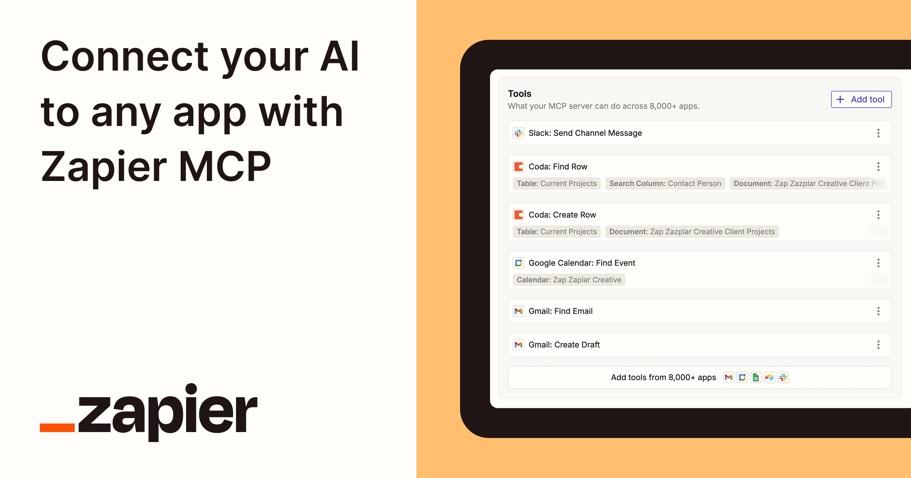

Model Context Protocol
Zapier MCP
Built features that give AI clients access to 8,000+ apps and 30,000+ actions, then scaled MCP tool execution as the service passed 4.6M+ completed tool calls.
- 8,000+apps
- 30,000+actions
- 4.6M+tool calls
